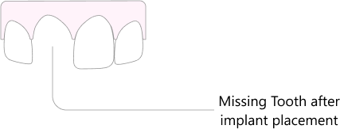
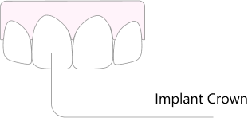
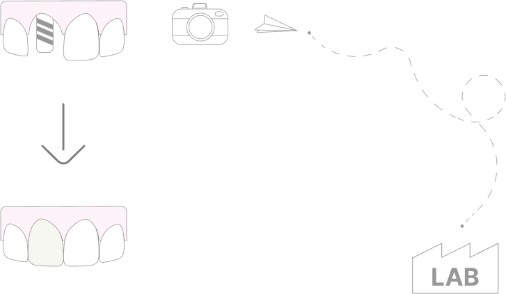
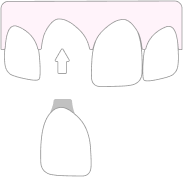
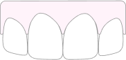

Front Implant Crown
A Solid Approach
An implant crown, especially in the smile region of the mouth, will preserve existing tissues while providing a functional tooth that does not depend on the strength of its neighbors.
What to expect
At the appointment
-
 Duration 30-60 min
Duration 30-60 min -
 Possible oral anesthetic use
Possible oral anesthetic use -
 Possible minor sensitivity
Possible minor sensitivity - Possible tooth colored temporary
After Appoinment
-
 Possible post operative discomfort
Possible post operative discomfort
What it is
There are many ways to replace a missing tooth
Typically a Implant crown is
- Used to finish an implant restoration
- Done after implant placement
- Done after implant stability is deemed acceptable


How it is accomplished
- Implant position is registered by a 3D scan or an impression

- Temporary tooth is made for the implant by request
- The 3D infromation is sent to a dental laboratory for crown fabrication
- Waiting time for crown fabrication is usually 2-3 weeks


- Crown is adjusted and delivered at the last appointment
Materials
- Zirconia Also known as zirconia based ceramics are the strongest ceramic materials available in dentistry today. The trade off of the material is that it is the least esthetic. Zirconia crowns always look flatter in color and do not have the depth and translucency that natural teeth display. This material is ideal for molar crowns in the back of the mouth.
- Porcelain The best looking material available in dentistry. Glassy matrix of porcelain materials creates translucency and depth of colors that is found in natural teeth. This also happens to be the weakest type of crown material. Perfect use of porcelain would be on the front teeth where biting stresses are smallest and need for esthetic appearance is greatest.
- Abutment The abutment is typically made out of titanium, This part connects the white ceramic tooth to the implant by way of a screw.